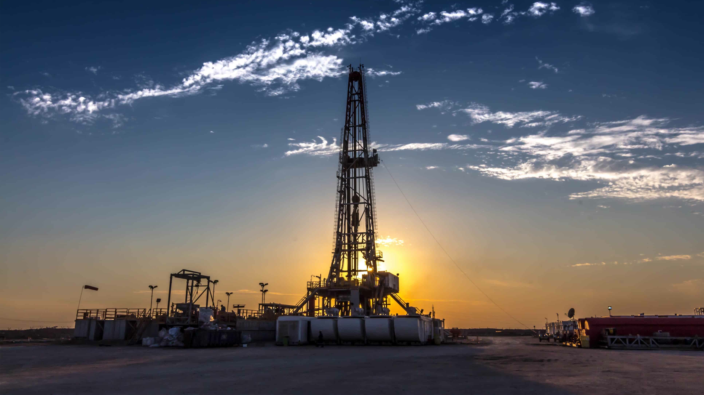
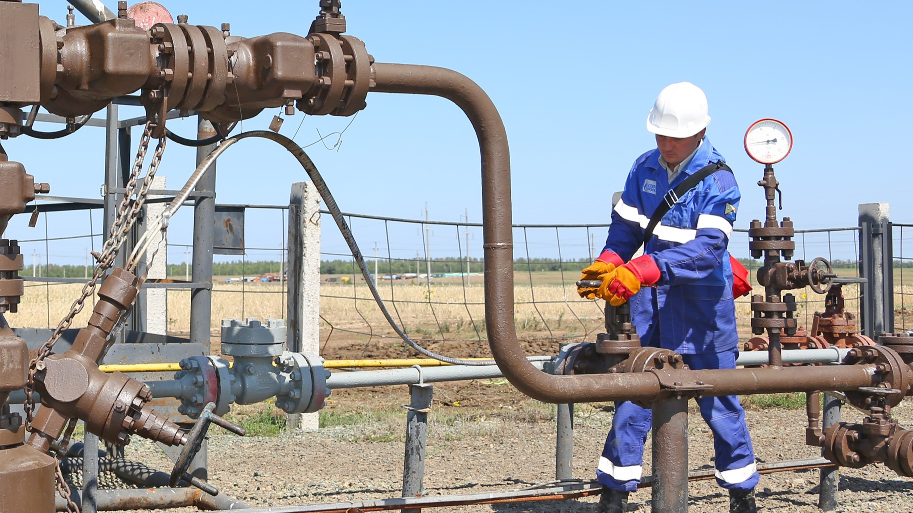
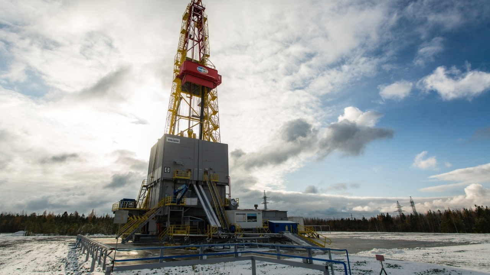

|  |  |
РОМНЕФТЬ - это нефтегазовая компания, которая начала свою деятельность в 1953 году. Компания специализируется на добыче и переработке нефти, а также разработке новых технологий и методов для обеспечения экологической безопасности.
Однако РОМНЕФТЬ - это не только нефтегазовая компания. Она также играет важную роль в экономической сфере. Компания предоставляет множество рабочих мест и содействует экономическому развитию регионов, в которых она действует. Благодаря этому, РОМНЕФТЬ оказывает положительное влияние на общество и мир в целом.
Компания также всегда заботится о своих акционерах. Регулярные выплаты дивидендов и устойчивая стоимость акций делают РОМНЕФТЬ привлекательным вариантом для инвестиций. Акционеры компании могут быть уверены в надежности своих инвестиций и стабильном доходе.
Эта вышка имеет внушительный вид и выделяется среди ландшафта.
Нефтегазовая вышка имеет высокую металлическую конструкцию с множеством труб и оборудования. Она окрашена в характерный цвет, соответствующий стандартам для таких сооружений.
Стоимость строительства и установки данной нефтегазовой вышки оценивается в несколько миллионов долларов США. Это значительная инвестиция, но она оправдана ожидаемой добычей нефти и газа.
Вышка спроектирована для добычи как нефти, так и природного газа. Ее производительность оценивается в несколько сотен баррелей нефти и миллионов кубических метров газа в день. Эффективное использование современных технологий и оборудования обеспечивает высокую производительность.
Ожидаемая окупаемость инвестиций в нефтегазовую вышку зависит от множества факторов:
В типичных условиях ожидается, что вышка начнет приносить прибыль через несколько лет эксплуатации.
Просто посмотрите, насколько это прекрасно!